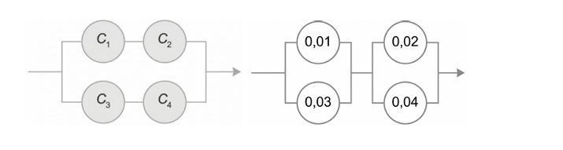

Os campos já vêm com os valores da lista. Troque os valores para resolver qualquer problema parecido.
Considere que você tem 3 conjuntos com valores aleatórios (A, B, C). Faça um script que retorna os seguintes eventos:
1. (A ∪ B);
2. A ∩ B;
3. A ∩ C;
4. Aᶜ.
Imagine o caso de retirar uma carta de um baralho de 52 cartas com 4 naipes. Crie um script que possamos indicar o tamanho total da população (por exemplo: 52 cartas), quantidade de grupos que a população é dividida igualmente (4 naipes) e que calcule a probabilidade de retirar um elemento que não faz parte de um dos grupo que possamos definir anteriormente (por exemplo: a carta não ser de ouros)
De um conjunto de cinco empresas, deseja-se selecionar, aleatoriamente, uma empresa, mas com probabilidade proporcional ao número de funcionários. O número de funcionários da Empresa A é 20; de B é 15; de C é 7; de D é 5 e de E é 3. Faça usando variáveis.
a) Qual é a probabilidade de cada uma das empresas ser a selecionada?
b) Qual é a probabilidade de a Empresa A não ser selecionada?
Na disciplina de Estatística para cursos de Engenharia, há 30 estudantes de Engenharia Civil e dez de outras engenharias. Selecionam-se, aleatoriamente e sem reposição, n estudantes para a realização de um trabalho. Calcule a probabilidade de todos serem de Engenharia Civil, considerando: Faça usando variáveis.
a) (n = 2)
b) (n = 4)
Considere o enunciado: A probabilidade de que Joãozinho resolva este problema é 0,5. A probabilidade de que Mariazinha resolva este problema é 0,7. Faça uma solução que solucione problemas iguais ao enunciado visando a probabilidade do problema ser resolvido se ambos tentarem independentemente?
Se os registros indicam que 504, dentre 813 lavadoras automáticas de pratos vendidas por uma grande loja de varejo, exigiram reparos dentro da garantia de um ano, qual é a probabilidade de uma lavadora dessa loja não exigir reparo dentro da garantia?
Uma rede local de computadores é composta por um servidor e cinco clientes (A, B, C, D e E). Registros anteriores indicam que dos pedidos de determinado tipo de processamento, cerca de 10% vêm do cliente A, 15% do B, 15% do C, 40% do D e 20% do E. Se o pedido não for feito de forma adequada, o processamento apresentará erros. Usualmente, ocorrem os seguintes percentuais de pedidos inadequados: 1% do cliente A, 2% do cliente B, 0,5% do cliente C, 2% do cliente D e 8% do cliente E.
a) Qual é a probabilidade de o sistema apresentar erro?
b) Qual é a probabilidade de que o processo tenha sido pedido pelo cliente E, sabendo que apresentou erro?
Em uma fábrica de parafusos, as máquinas A, B e C produzem 25%, 35% e 40% do total produzido. Da produção de cada máquina, 5%, 4% e 2%, respectivamente, são defeituosos. Escolhe-se ao acaso um parafuso e verifica-se que ele é defeituoso. Qual é a probabilidade de que seja da máquina A, da máquina B e da máquina C?
Faça um script que eu possa escolher entre as duas configurações apresentados nas imagens abaixo, que possa escolher a probabilidade de funcionamento de cada componente (probabilidade de funcionamento de 4 componentes), e que resolva a probabilidade do sistema de funcionar.
Configuração 1: C1 e C2 em série (cima), C3 e C4 em série (baixo), e os dois ramos em paralelo.
Configuração 2: C1 e C3 em paralelo (esquerda), C2 e C4 em paralelo (direita), e os dois blocos em série.

Os valores da 2ª figura (0,01 / 0,02 / 0,03 / 0,04) são probabilidades de falha (o componente funciona com 0,99 / 0,98 / 0,97 / 0,96). Por isso eles já vêm marcados como "Falha". C1 e C2 ficam em cima, C3 e C4 embaixo.
Certo tipo de conserva tem peso líquido médio de 900 g, com desvio-padrão de 10 g. A embalagem tem peso médio de 100 g, com desvio padrão de 4 g. Suponha que o processo de enchimento das embalagens controla o peso líquido, de tal forma que se possa supor independência entre o peso líquido e o peso da embalagem. Quais são a média e o desvio-padrão do peso bruto? Faça utilizando variáveis que podem ser modificadas e geradas automaticamente a média e o desvio padrão.
Dados históricos mostram que 5% dos itens provindos de um fornecedor apresentam algum tipo de defeito. Considerando um lote com 20 itens, calcule a probabilidade de:
a) haver algum item com defeito;
b) haver exatamente dois itens defeituosos;
c) haver mais de dois itens defeituosos.
d) Qual é o número esperado de itens defeituosos no lote? E de itens bons?
e) Qual é a variância da função de probabilidade do número de itens defeituosos no lote?
Seja uma população com 60 mulheres e 40 homens. Sorteiam-se duas pessoas. Calcule a probabilidade de sair exatamente uma mulher, usando a hipergeométrica. Faça com variáveis que possam ser modificadas!
Mensagens chegam a um servidor de acordo com uma distribuição de Poisson, com taxa média de cinco chegadas por minuto. Faça com variáveis que possam ser modificadas!
a) Qual é a probabilidade de que duas chegadas ocorram em um minuto?
b) Qual é a probabilidade de que uma chegada ocorra em 30 segundos (Use variáveis)?
a)
b)
Em um canal de comunicação digital, a probabilidade de receber um bit com erro é de 0,0002. Se 10.000 bits forem transmitidos por esse canal, qual é a probabilidade de que mais de 4 bits sejam recebidos com erro? Faça com variáveis que possam ser modificadas!
Uma variável (X) é uniformemente distribuída no intervalo [A, B]. Faça um algoritmo que calcule o valor esperado e variância de (X) e a (P(C < X < D)).
Os tempos até a falha de um dispositivo eletrônico seguem o modelo exponencial, com uma taxa de falha (λ = "A" falhas/hora). Indique qual a probabilidade de um dispositivo escolhido ao acaso sobreviver a C horas? E a D horas? Para testar use A = 0,012, C=50 e D=100
Certo tipo de conserva tem peso líquido (X1) com média de M1 g e desvio-padrão de D1 g. A embalagem tem peso (X2) com média de M2 g e desvio-padrão de D2 g. Suponha (X1) e (X2) independentes e com distribuições normais. Para o teste use os valores 900g, 10g, 100g e 4g respectivamente.
a) Faça um programa que calcule a probabilidade de o peso bruto (peso líquido + peso da embalagem) ser superior a uma referência MS. Para o teste use o valor 1.020
b) Faça um programa que calcule a probabilidade de o peso bruto estar entre um intervalo entre I1 e I2 g. Para teste use os valores 980 e 1.020 g
Faça um script que, seja (Z) uma variável aleatória com distribuição normal padrão, calcule o valor entre intervalos. Use os seguintes valores para teste:
a) (P(0 < Z < 1,73))
b) (P(0,81 < Z < +∞))
c) (P(-1,25 ≤ Z ≤ -0,63))
Para infinito digite inf ou -inf
Faça um script que, baseado em uma variável com distribuição normal de média (μ = Me) e (σ = Dp), possa calcular a probabilidade do evento acontecer em intervalos (entre intervalos, menor que e maior que). Use Me=48 e Dp=3 e os seguintes anunciados como teste:
a) a probabilidade do evento ter valores entre 42 e 49 cm;
b) a probabilidade do evento ter valores superiores a 52 cm;
c) a probabilidade do evento ter valores inferiores a 45 cm;